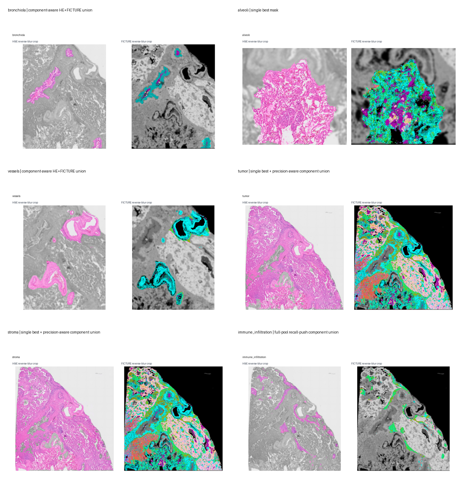
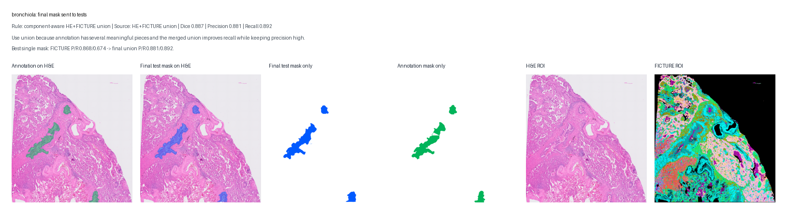
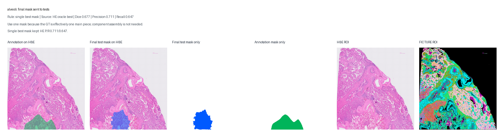
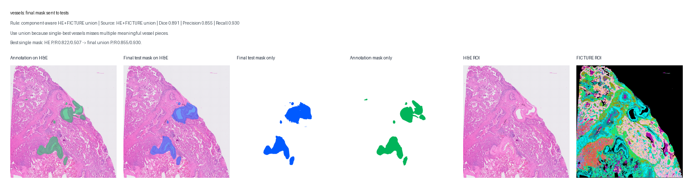
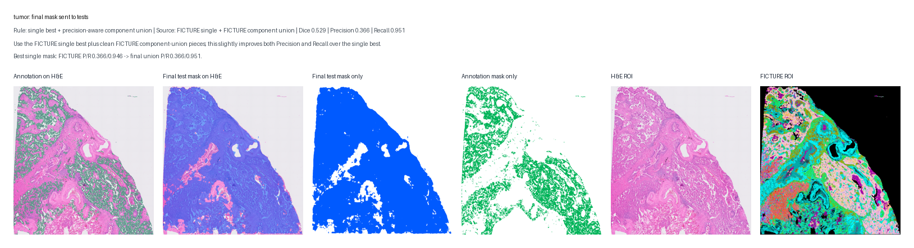
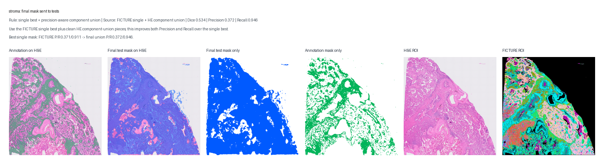
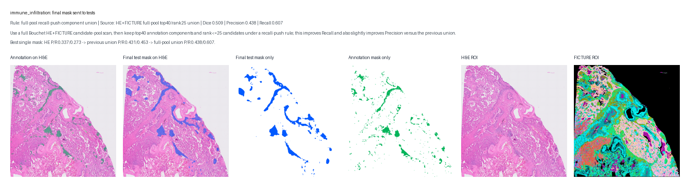

后续 Test1/Test2 不再直接用原始单块 pool。每个 tissue class 先确定一个最终候选 mask：bronchiola/vessels 用已验证的 merged component union；alveoli 用单个 best mask；tumor/stroma 用 single-best + precision-aware component union；immune infiltration 用 Bouchet 全 HE+FICTURE 候选池扫描后的 top40/rank25 recall-push union。

| class | test_mask_rule | source | reported Dice | reported Precision | reported Recall | local Dice | local Precision | local Recall | single-best check |
|---|---|---|---|---|---|---|---|---|---|
| bronchiola | component-aware HE+FICTURE union | HE+FICTURE union | 0.887 | 0.881 | 0.892 | 0.887 | 0.881 | 0.892 | Best single mask: FICTURE P/R 0.868/0.674 -> final union P/R 0.881/0.892. |
| alveoli | single best mask | HE oracle best | 0.677 | 0.711 | 0.647 | 0.677 | 0.711 | 0.647 | Single best mask kept: HE P/R 0.711/0.647. |
| vessels | component-aware HE+FICTURE union | HE+FICTURE union | 0.891 | 0.855 | 0.930 | 0.891 | 0.855 | 0.930 | Best single mask: HE P/R 0.822/0.507 -> final union P/R 0.855/0.930. |
| tumor | single best + precision-aware component union | FICTURE single + FICTURE component union | 0.529 | 0.366 | 0.951 | 0.529 | 0.366 | 0.951 | Best single mask: FICTURE P/R 0.366/0.946 -> final union P/R 0.366/0.951. |
| stroma | single best + precision-aware component union | FICTURE single + HE component union | 0.534 | 0.372 | 0.946 | 0.534 | 0.372 | 0.946 | Best single mask: FICTURE P/R 0.371/0.911 -> final union P/R 0.372/0.946. |
| immune_infiltration | full-pool recall-push component union | HE+FICTURE full-pool top40/rank25 union | 0.509 | 0.438 | 0.607 | 0.509 | 0.438 | 0.607 | Best single mask: HE P/R 0.337/0.273 -> previous union P/R 0.431/0.453 -> full-pool union P/R 0.438/0.607. |
Rule: component-aware HE+FICTURE union Source: HE+FICTURE union Dice: 0.887 Precision: 0.881 Recall: 0.892
Best single mask: FICTURE P/R 0.868/0.674 -> final union P/R 0.881/0.892.

Rule: single best mask Source: HE oracle best Dice: 0.677 Precision: 0.711 Recall: 0.647
Single best mask kept: HE P/R 0.711/0.647.

Rule: component-aware HE+FICTURE union Source: HE+FICTURE union Dice: 0.891 Precision: 0.855 Recall: 0.930
Best single mask: HE P/R 0.822/0.507 -> final union P/R 0.855/0.930.

Rule: single best + precision-aware component union Source: FICTURE single + FICTURE component union Dice: 0.529 Precision: 0.366 Recall: 0.951
Best single mask: FICTURE P/R 0.366/0.946 -> final union P/R 0.366/0.951.

Rule: single best + precision-aware component union Source: FICTURE single + HE component union Dice: 0.534 Precision: 0.372 Recall: 0.946
Best single mask: FICTURE P/R 0.371/0.911 -> final union P/R 0.372/0.946.

Rule: full-pool recall-push component union Source: HE+FICTURE full-pool top40/rank25 union Dice: 0.509 Precision: 0.438 Recall: 0.607
Best single mask: HE P/R 0.337/0.273 -> previous union P/R 0.431/0.453 -> full-pool union P/R 0.438/0.607.
